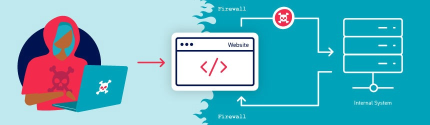

Server-side parameter pollution
Some systems contain internal APIs that aren't directly accessible from the internet. Server-side parameter pollution occurs when a website embeds user input in a server-side request to an internal API without adequate encoding. This means that an attacker may be able to manipulate or inject parameters, which may enable them to, for example:
- Override existing parameters.
- Modify the application behavior.
- Access unauthorized data.
You can test any user input for any kind of parameter pollution. For example, query parameters, form fields, headers, and URL path parameters may all be vulnerable.

Note
This vulnerability is sometimes called HTTP parameter pollution. However, this term is also used to refer to a web application firewall (WAF) bypass technique. To avoid confusion, in this topic we'll only refer to server-side parameter pollution.
In addition, despite the similar name, this vulnerability class has very little in common with server-side prototype pollution.
Testing for server-side parameter pollution in the query string
To test for server-side parameter pollution in the query string, place query syntax characters like #,
&, and = in your input and observe how the application responds.
Consider a vulnerable application that enables you to search for other users based on their username. When you search for a user, your browser makes the following request:
GET /userSearch?name=peter&back=/homeTo retrieve user information, the server queries an internal API with the following request:
GET /users/search?name=peter&publicProfile=trueTruncating query strings
You can use a URL-encoded # character to attempt to truncate the server-side request. To help you interpret the response, you could also add a string after the # character.
For example, you could modify the query string to the following:
GET /userSearch?name=peter%23foo&back=/homeThe front-end will try to access the following URL:
GET /users/search?name=peter#foo&publicProfile=trueNote
It's essential that you URL-encode the # character. Otherwise the front-end application will interpret it as a fragment identifier and it won't be passed to the internal API.
Review the response for clues about whether the query has been truncated. For example, if the response returns the user peter, the server-side query may have been truncated. If an Invalid name error message is returned, the application may have treated
foo as part of the username. This suggests that the server-side request may not have been truncated.
If you're able to truncate the server-side request, this removes the requirement for the publicProfile field to be set to true. You may be able to exploit this to return non-public user profiles.
Injecting invalid parameters
You can use an URL-encoded & character to attempt to add a second parameter to the server-side request.
For example, you could modify the query string to the following:
GET /userSearch?name=peter%26foo=xyz&back=/homeThis results in the following server-side request to the internal API:
GET /users/search?name=peter&foo=xyz&publicProfile=trueReview the response for clues about how the additional parameter is parsed. For example, if the response is unchanged this may indicate that the parameter was successfully injected but ignored by the application.
To build up a more complete picture, you'll need to test further.
Injecting valid parameters
If you're able to modify the query string, you can then attempt to add a second valid parameter to the server-side request.
Related pages
For information on how to identify parameters that you can inject into the query string, see the Finding hidden parameters section.
For example, if you've identified the email parameter, you could add it to the query string as follows:
GET /userSearch?name=peter%26email=foo&back=/homeThis results in the following server-side request to the internal API:
GET /users/search?name=peter&email=foo&publicProfile=trueReview the response for clues about how the additional parameter is parsed.
Overriding existing parameters
To confirm whether the application is vulnerable to server-side parameter pollution, you could try to override the original parameter. Do this by injecting a second parameter with the same name.
For example, you could modify the query string to the following:
GET /userSearch?name=peter%26name=carlos&back=/homeThis results in the following server-side request to the internal API:
GET /users/search?name=peter&name=carlos&publicProfile=true
The internal API interprets two name parameters. The impact of this depends on how the application processes the second parameter. This varies across different web technologies. For example:
- PHP parses the last parameter only. This would result in a user search for
carlos. - ASP.NET combines both parameters. This would result in a user search for
peter,carlos, which might result in anInvalid usernameerror message. - Node.js / express parses the first parameter only. This would result in a user search for
peter, giving an unchanged result.
If you're able to override the original parameter, you may be able to conduct an exploit. For example, you could add
name=administrator to the request. This may enable you to log in as the administrator user.
Testing for server-side parameter pollution in REST paths
A RESTful API may place parameter names and values in the URL path, rather than the query string. For example, consider the following path:
/api/users/123The URL path might be broken down as follows:
/apiis the root API endpoint./usersrepresents a resource, in this caseusers./123represents a parameter, here an identifier for the specific user.
Consider an application that enables you to edit user profiles based on their username. Requests are sent to the following endpoint:
GET /edit_profile.php?name=peterThis results in the following server-side request:
GET /api/private/users/peterAn attacker may be able to manipulate server-side URL path parameters to exploit the API. To test for this vulnerability, add path traversal sequences to modify parameters and observe how the application responds.
You could submit URL-encoded peter/../admin as the value of the name parameter:
GET /edit_profile.php?name=peter%2f..%2fadminThis may result in the following server-side request:
GET /api/private/users/peter/../admin
If the server-side client or back-end API normalize this path, it may be resolved to /api/private/users/admin.
Testing for server-side parameter pollution in structured data formats
An attacker may be able to manipulate parameters to exploit vulnerabilities in the server's processing of other structured data formats, such as a JSON or XML. To test for this, inject unexpected structured data into user inputs and see how the server responds.
Consider an application that enables users to edit their profile, then applies their changes with a request to a server-side API. When you edit your name, your browser makes the following request:
POST /myaccount
name=peter
This results in the following server-side request:
PATCH /users/7312/update
{"name":"peter"}
You can attempt to add the access_level parameter to the request as follows:
POST /myaccount
name=peter","access_level":"administratorIf the user input is added to the server-side JSON data without adequate validation or sanitization, this results in the following server-side request:
PATCH /users/7312/update
{name="peter","access_level":"administrator"}
This may result in the user peter being given administrator access.
Related pages
For information on how to identify parameters that you can inject into the query string, see the Finding hidden parameters section.
Consider a similar example, but where the client-side user input is in JSON data. When you edit your name, your browser makes the following request:
POST /myaccount
{"name": "peter"}
This results in the following server-side request:
PATCH /users/7312/update
{"name":"peter"}
You can attempt to add the access_level parameter to the request as follows:
POST /myaccount
{"name": "peter\",\"access_level\":\"administrator"}If the user input is decoded, then added to the server-side JSON data without adequate encoding, this results in the following server-side request:
PATCH /users/7312/update
{"name":"peter","access_level":"administrator"}
Again, this may result in the user peter being given administrator access.
Structured format injection can also occur in responses. For example, this can occur if user input is stored securely in a database, then embedded into a JSON response from a back-end API without adequate encoding. You can usually detect and exploit structured format injection in responses in the same way you can in requests.
Note
This example below is in JSON, but server-side parameter pollution can occur in any structured data format. For an example in XML, see the XInclude attacks section in the XML external entity (XXE) injection topic.
Testing with automated tools
Burp includes automated tools that can help you detect server-side parameter pollution vulnerabilities.
Burp Scanner automatically detects suspicious input transformations when performing an audit. These occur when an application receives user input, transforms it in some way, then performs further processing on the result. This behavior doesn't necessarily constitute a vulnerability, so you'll need to do further testing using the manual techniques outlined above. For more information, see the Suspicious input transformation issue definition.
You can also use the Backslash Powered Scanner BApp to identify server-side injection vulnerabilities. The scanner classifies inputs as boring, interesting, or vulnerable. You'll need to investigate interesting inputs using the manual techniques outlined above. For more information, see the Backslash Powered Scanning: hunting unknown vulnerability classes whitepaper.
Preventing server-side parameter pollution
To prevent server-side parameter pollution, use an allowlist to define characters that don't need encoding, and make sure all other user input is encoded before it's included in a server-side request. You should also make sure that all input adheres to the expected format and structure.